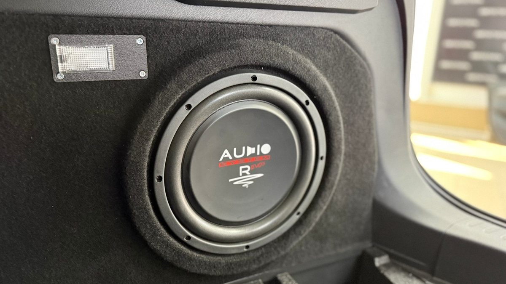

Вы едете по М8 в сторону Вологды, за окном темно, дорога пустая, и хочется сделать музыку погромче. Штатная система Haval F7 громкость даёт, но на любимом треке бас звучит как картонный щелчок, а на прибавке начинают хрипеть двери. Хочется, чтобы низ был настоящим. И сразу вопрос: куда его ставить, если багажник нужен под коляску, лыжи или сумки, а магнитолу менять не хочется?
Сабвуфер в Хавал Ф7 ставят без замены штатной мультимедиа и без отрезания багажника. Есть три рабочих варианта: активный под сиденье, стелс в нише и компактный короб. Подключают его к штатной магнитоле через высокоуровневый вход или преобразователь уровня. Ниже разбираем каждый вариант, порядок подключения и ошибки, из-за которых бас звучит отдельно от музыки.

Почему в Haval F7 не хватает баса
Штатная акустика в машинах этого класса собрана под тихую и среднюю громкость. Динамик 16 см в двери, тонкий металл, технологические отверстия во внутренней панели, обшивка на защёлках. Чтобы сыграть низкую частоту громко, диффузор должен двигаться с большим ходом, а двери на это не рассчитаны. Штатная мультимедиа это знает и подрезает самый низ, чтобы динамики не хрипели.
Отсюда «пустой» звук. Сабвуфер снимает нагрузку с дверей: он берёт на себя всё, что ниже примерно 80–100 Гц, а двери играют середину. Но есть важное условие. Если передние двери дребезжат и звучат тонко, бас из багажника будет жить отдельно. Поэтому хотя бы минимальная обработка передних дверей и проклейка обшивки делают сабвуфер в разы полезнее.
Куда поставить сабвуфер в Haval F7: три варианта
Активный сабвуфер под сиденье. Плоский корпус со встроенным усилителем под передним сиденьем. Багажник не занимает совсем. Звук становится плотнее, уходит ощущение «картонности». Но это подложка, а не глубокий бас: маленькому динамику в плоском корпусе не хватает объёма. Перед покупкой проверяют место: в комплектациях с электрорегулировкой сидений под ними идут моторы и жгуты, и корпус может не встать.
Стелс в нише багажника. По бокам багажника за арками есть ниши, под полом – ниша запасного колеса. Корпус выклеивают из стеклоткани точно по форме ниши, ставят динамик и закрывают обшивкой или решёткой. Пол багажника остаётся ровным, машина выглядит заводской. Баса заметно больше, чем у подсидельного, но меньше, чем у полноценного короба: объём ограничен нишей.
Компактный короб. Закрытый короб под 10-дюймовый динамик встаёт к спинке заднего сиденья или в угол. Это самый глубокий и точный бас из трёх вариантов, но часть багажника он забирает. Если машина возит детские вещи, продукты и дачу, его место продумывают заранее, иначе через неделю короб начнут выносить в гараж.
Кому что. Ездите в городе, слушаете радио и подкасты, багажник нужен каждый день – подсидельный активный. Хотите полноценный бас и чистый багажник – стелс. Музыка для вас главное, а багажник не всегда забит – короб.
Хавал Ф7: как подключить сабвуфер к штатной системе
Это самая частая точка вопросов. Штатная мультимедиа Haval F7 не имеет отдельного выхода под сабвуфер, поэтому сигнал берут с динамиков. Схема такая.
1. Сигнал. У активного сабвуфера есть высокоуровневый вход: на него подают провода с динамиков. Для пассивного сабвуфера с отдельным усилителем ставят преобразователь уровня, который превращает сигнал динамиков в линейный. Подключение идёт через переходники на штатные разъёмы, без надрезов проводки.
2. Откуда брать сигнал. Логичнее с передних динамиков. Если взять с задних, то при сдвиге фейдера вперёд сабвуфер потеряет сигнал и замолчит. А штатная обработка иногда отрезает задним каналам часть баса.
3. Питание. Отдельный провод нужного сечения от аккумулятора через моторный щит в салон, предохранитель рядом с клеммой. Провод ведут по штатным каналам, не через двери и не под педалями.
4. Масса. Короткий провод к зачищенному металлу кузова рядом с усилителем. Плохая масса даёт гул, который меняется вместе с оборотами двигателя.
5. Включение. Усилитель должен засыпать вместе с машиной: управляющий провод от цепи зажигания или автовключение по сигналу. Иначе зимней ночью во дворе он посадит аккумулятор.
После подключения обязательно настраивают частоту среза и фазу. Без этого сабвуфер может играть голос или бас из него будет запаздывать относительно дверей.

Установка сабвуфера Хавал Ф7 21 год и другие годы: есть ли разница
Владельцы часто ищут инструкцию под свой год выпуска, например «установка сабвуфера хавал ф7 21 год». Принцип для разных лет один и тот же: сигнал с динамиков, питание от аккумулятора, сабвуфер в нише или под сиденьем. Отличаться могут разъёмы мультимедиа и динамиков, раскладка проводки и детали обшивки багажника.
Поэтому перед покупкой переходников и корпуса мастер смотрит конкретную машину: какая мультимедиа стоит, какие разъёмы, есть ли запаска под полом и как снимается обшивка ниши. Покупать «под F7 вообще» без этой проверки – значит рисковать тем, что переходник не подойдёт или стелс не встанет в нишу.
Сабвуфер к штатной магнитоле: что учесть в настройке
Штатная мультимедиа обрабатывает сигнал под заводские динамики. Это влияет на сабвуфер.
- Громкость баса меняется с громкостью музыки иначе, чем ожидаешь. Некоторые штатные системы сами поднимают или срезают низ на разной громкости. Регулятор уровня сабвуфера выводят к водителю, если это возможно, чтобы подстроить под трек.
- Эквалайзер в меню. Если там подняты низы, сабвуфер получает перекачанный сигнал и начинает бубнить. Эквалайзер лучше выставить ровно, а бас добирать уровнем сабвуфера.
- Процессор. Если хочется, чтобы всё звучало собранно, между штатной системой и усилителями ставят процессор. Он убирает заводскую обработку, делит частоты и выставляет задержки. Это следующий шаг после сабвуфера, не обязательный, но заметный.
Проверка перед визитом: какой бас нужен именно вам
Пять минут в своей машине помогут не переплатить и не ошибиться с вариантом.
1. Включите трек, который слушаете чаще всего, на привычной громкости. Если бас просто тонковат, а двери не хрипят, хватит подсидельного активного.
2. Прибавьте до громкости, на которой вы слушаете на трассе. Если двери начинают хрипеть и дребезжать, сабвуфер поможет, но вместе с ним стоит проклеить хотя бы передние двери.
3. Положите ладонь на обшивку двери рядом с динамиком. Сильная вибрация пластика значит, что энергия уходит в дверь.
4. Откройте багажник и посмотрите, что в нём лежит обычно. Это и есть ответ, сколько места вы готовы отдать басу.
5. Проверьте, где у вас запаска. От этого зависит, свободна ли ниша под полом.
С этими ответами разговор с мастером займёт меньше времени, а результат совпадёт с ожиданием.
Ошибки, которые портят бас
- Не проклеить багажник. Крышка багажника, номерной знак, полка и пластик ниш начинают трещать на басу. На ярославских стыках и ямах к этому добавляется стук незакреплённых вещей. Антискрип и виброизоляция крышки дают больше, чем более мощный сабвуфер.
- Сигнал с задних динамиков. Сдвинули фейдер – бас исчез.
- Провод питания без предохранителя. Перетёртая изоляция под ковром – риск пожара.
- Огромный короб «на вырост». Багажник пропал, а бас бубнит, потому что корпус не рассчитан под динамик.
- Без настройки фазы. Сабвуфер гасит бас из дверей, и вместо прибавки получается провал.
Частые вопросы
Нужно ли менять магнитолу, чтобы поставить сабвуфер? Нет. Сабвуфер подключается к штатной мультимедиа через высокоуровневый вход или преобразователь уровня.
Пропадёт ли место под запаску? Зависит от варианта. Подсидельный и боковой стелс место под запаску не трогают. Если сабвуфер ставят в нишу запасного колеса, вопрос с колесом решают заранее.
Не сядет ли аккумулятор зимой? Если усилитель правильно засыпает вместе с машиной, не сядет. Если батарея старая, её стоит проверить до установки.
Сколько стоит поставить сабвуфер в Haval F7? Стоимость зависит от варианта: подсидельный, стелс по форме ниши или короб, плюс провода, переходники и проклейка багажника, если она нужна. Её называют после осмотра машины.
Что будет с гарантией, если машина новая? Для нового автомобиля важно, чтобы работу делала студия с сертификатами. Уточните это у мастера до начала работ.
Где поставить сабвуфер в Haval F7 в Ярославле
Студия «Звук на Волге», Ярославль, проспект Октября, 82б. Пн–пт 8:30–20:00, сб–вс 10:00–19:00. Haval F7 есть среди наших работ. Для нового автомобиля можно не переживать за дилерскую гарантию: у студии есть необходимые сертификаты. Сабвуферы можно послушать на специальном стенде в студии, а после установки приехать сменить настройки.
Подробнее и запись: сабвуфер и автозвук для Haval F7 в Ярославле. Телефон +7 902 220-75-55, сообщения в ВК: vk.me/avtostil_yaroslavl.
Раньше студия называлась «Автостиль». Мы обновились и, раз делаем звук в Ярославле, теперь мы «Звук на Волге». Адрес тот же.